Downhill Mountain Bike
2025
- Manufactured the frame's CFRP tubes on a custom filament winder and post-processor.
- Designed a G-code generator to wind variable cross-section tubes for the tapered top tube.
- Machined aluminum lugs and ran epoxy tensile tests to pick the frame's structural adhesive.
Collaborators
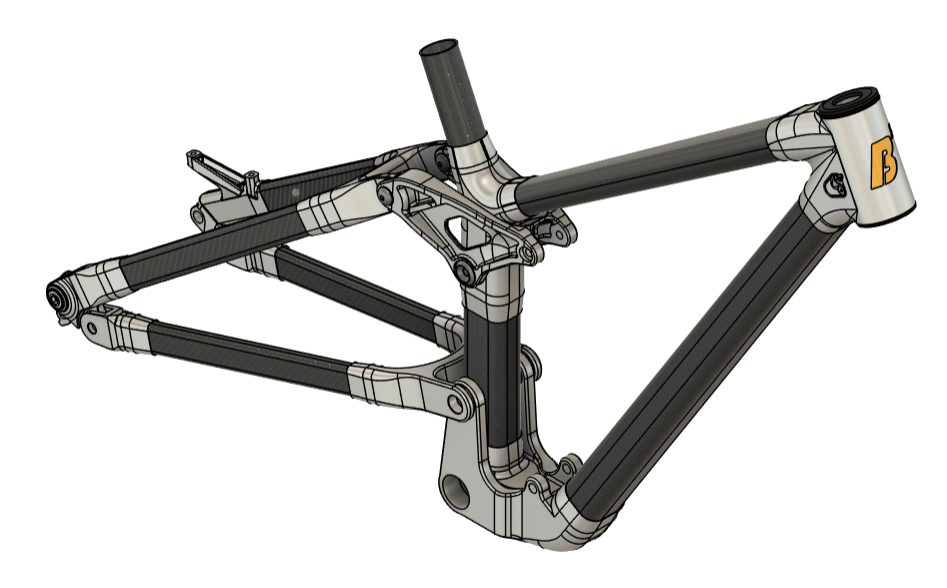
Overview
Built with Bike Builders of Berkeley, this is a fully custom downhill mountain bike frame engineered to survive the high-impact loads of a downhill race course. Downhill riding puts extreme, repeated stress on a frame, so the design had to be stiff enough to handle hard landings and rough terrain while staying light enough to be competitive. To get there, we built the frame from carbon fiber (CFRP) tubes bonded to 3D-printed aluminum lugs, a hybrid approach that pairs the exceptional stiffness-to-weight of carbon with the complex geometry, precise tolerances, and suspension hardpoints that are far easier to achieve in machined metal. Rather than buy off-the-shelf tubing, we manufactured every carbon tube in house on tooling we designed and built ourselves, which gave us full control over each tube's wall thickness, layup, and cross-section. On the team, Pranav Amarnath is the lead composites and manufacturing engineer and I am the lead electrical and components engineer, and we worked closely together across the entire build.
Composites and manufacturing
I manufactured the frame's CFRP tubes using the custom filament winder and post-processing system I helped design and build (see the Carbon Fiber Filament Winder project). Each tube starts as continuous carbon tow, wet out with epoxy and wound under controlled tension onto a sectioned mandrel that defines its inner shape. Once wound, the tube is vacuum bagged and cured, then post-processed to compact the laminate, drive out excess resin, and leave a clean structural surface. Building the tubes ourselves meant we could tune the fiber orientation and resin content for the loads each part of the frame would see, and produce shapes that simply are not available as stock tubing.
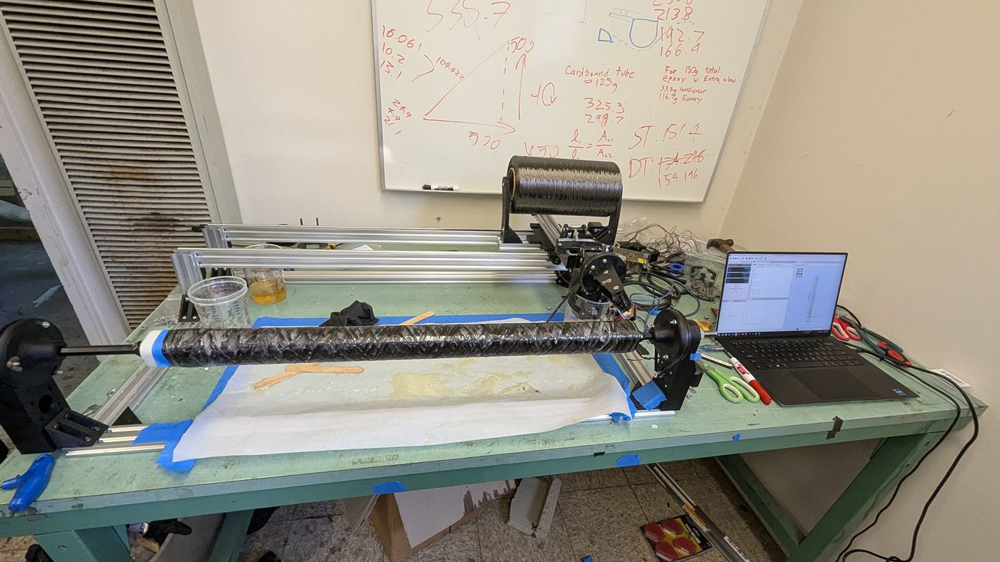 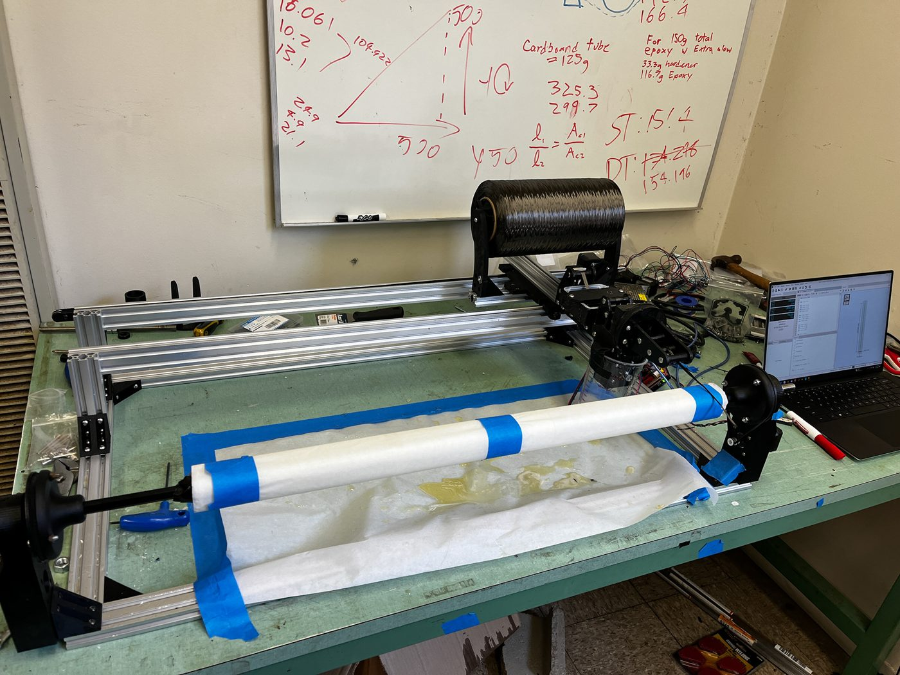
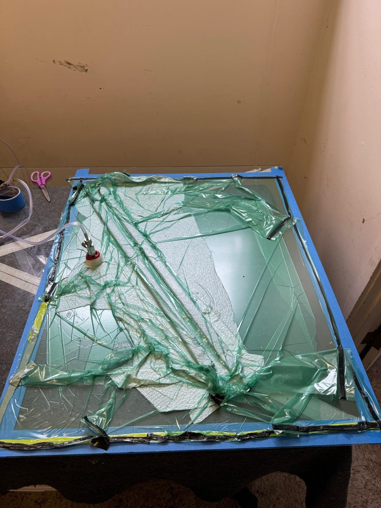 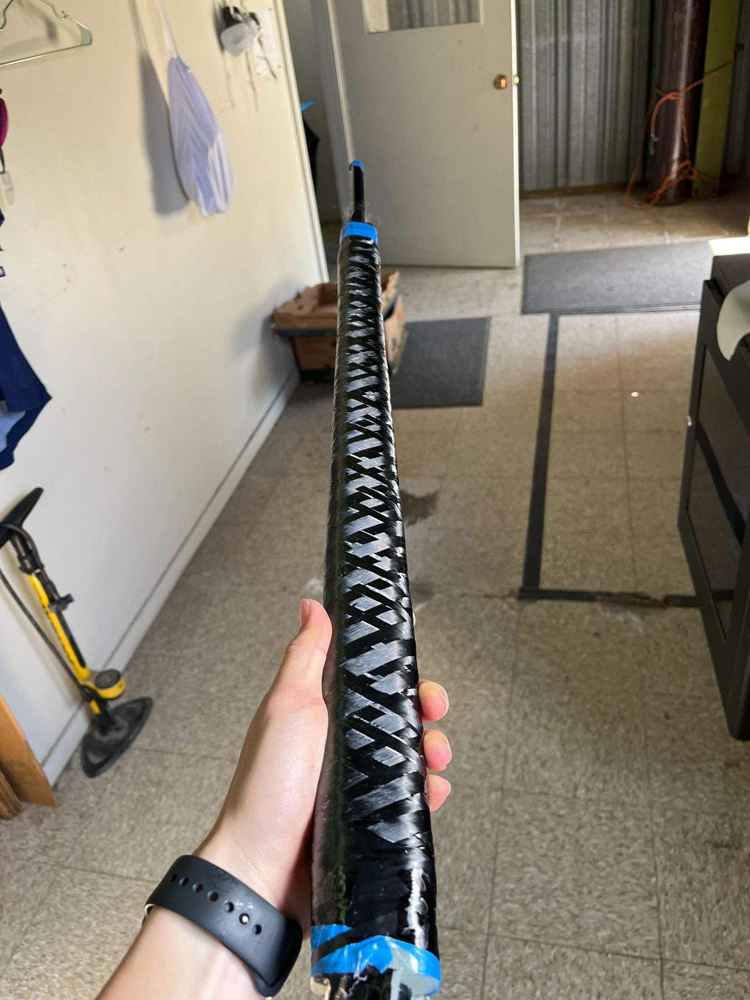
Machining and testing
Alongside the composites work, I helped machine the aluminum lugs and pivot hardware that tie the frame together. The lugs come off the printer close to net shape, so we post-machined the critical features by hand, reaming bearing bores and facing mating surfaces to tolerance, and I built custom fixtures and spacers to hold each part so that bored holes stayed concentric and the suspension pivots would line up correctly. Because the whole frame relies on the bond between the carbon tubes and the aluminum lugs, we also had to be certain we were using the right adhesive. I ran a set of epoxy tensile tests on an Instron machine, bonding sample coupons with several candidate epoxies and pulling them to failure to measure lap-shear strength, then used those results to choose the adhesive that performed best for the final frame.
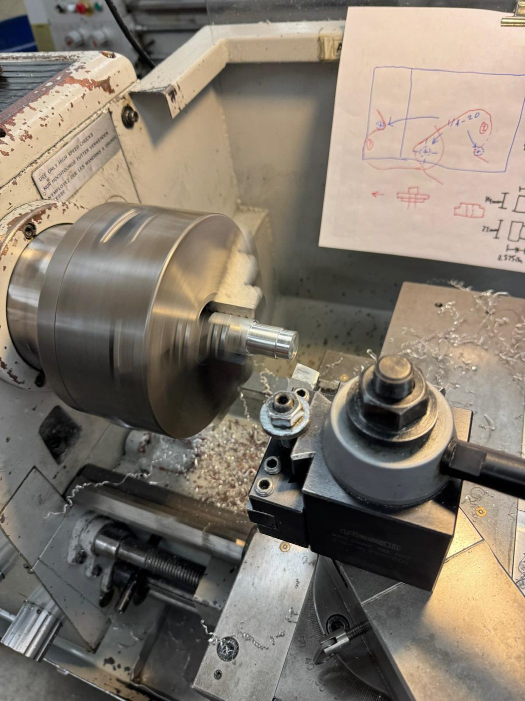 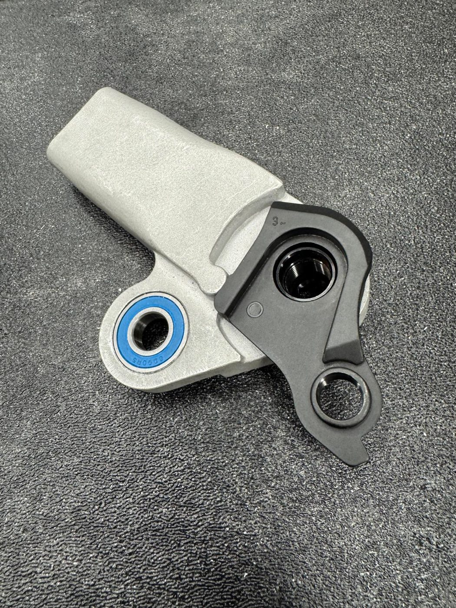 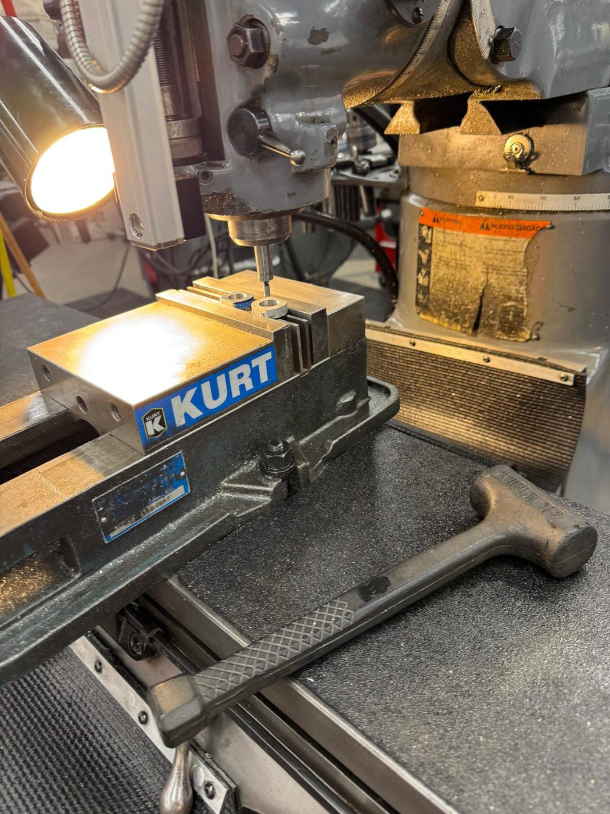
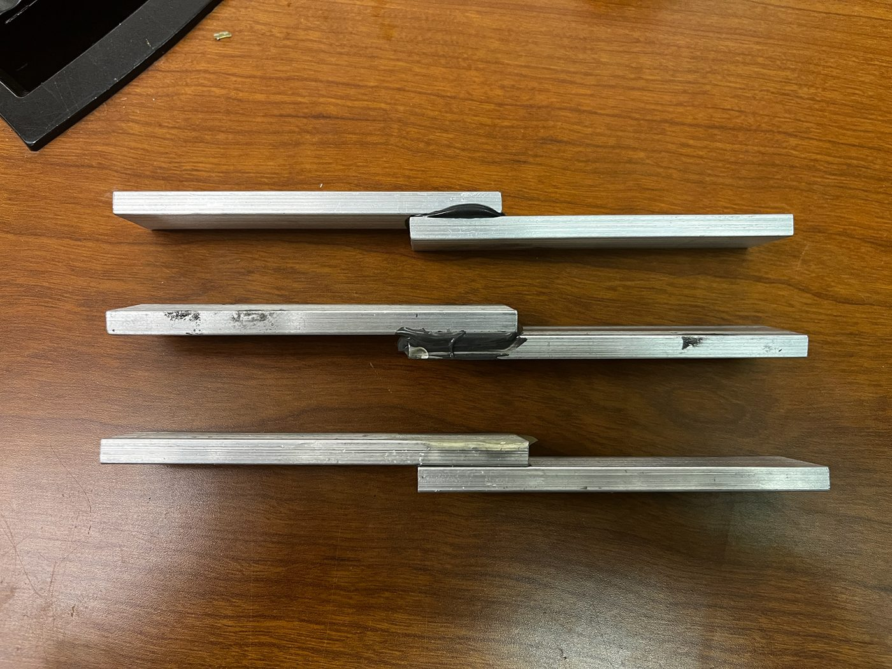 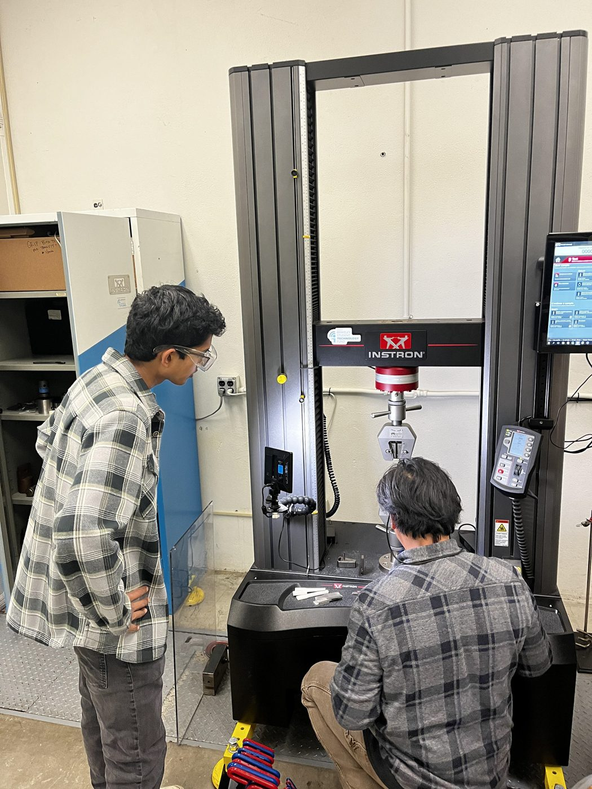
The top tube
The top tube was my work from end to end. Most of the frame's tubes are constant in cross-section, which makes them straightforward to wind, but the top tube changes shape along its length, and a standard winding process simply cannot produce it. To solve that, I designed a G-code generator that computes the winding paths for tubes with a variable, non-constant cross-section, adjusting the fiber layup and machine motion as the tube's profile changes along its length (see the GCode Generator and Sender project). With that tool, I was able to wind the tapered top tube directly, taking the part from a parametric definition all the way to a finished carbon component. It was the piece of the frame I owned completely, from the tooling and the software through to the physical tube.
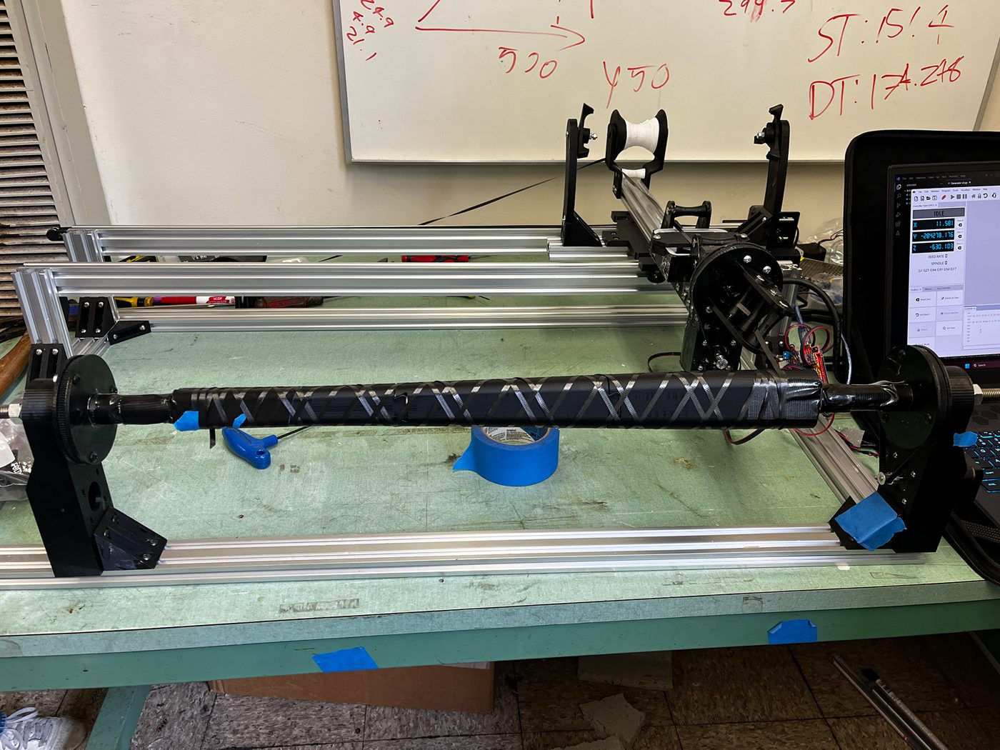 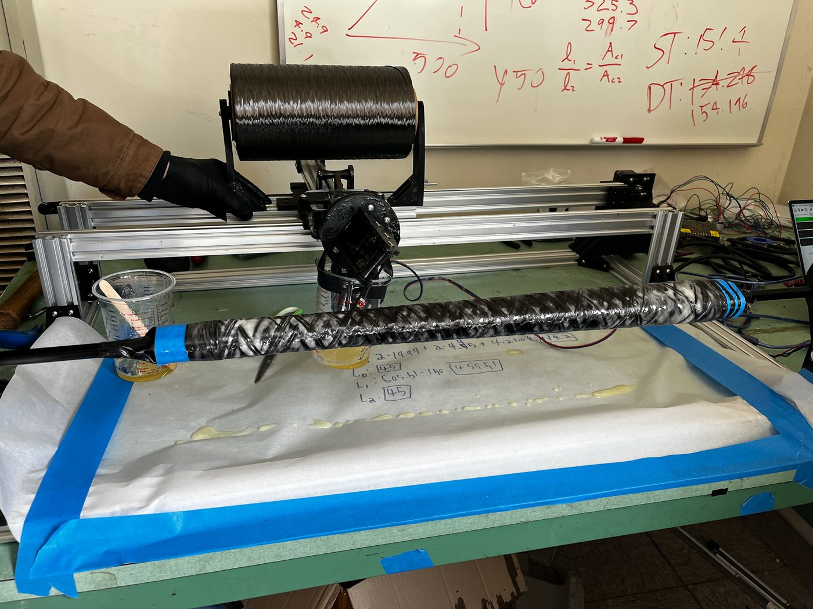
Results
With the tubes wound and finished and the lugs machined and bonded, we assembled everything into a complete, rideable downhill frame. Watching the parts I manufactured come together into a working bike, from raw carbon tow and printed metal to a frame that can actually take a downhill course, was the most rewarding part of the project, and it gave the whole team real hardware to test, ride, and keep improving on the next iteration.
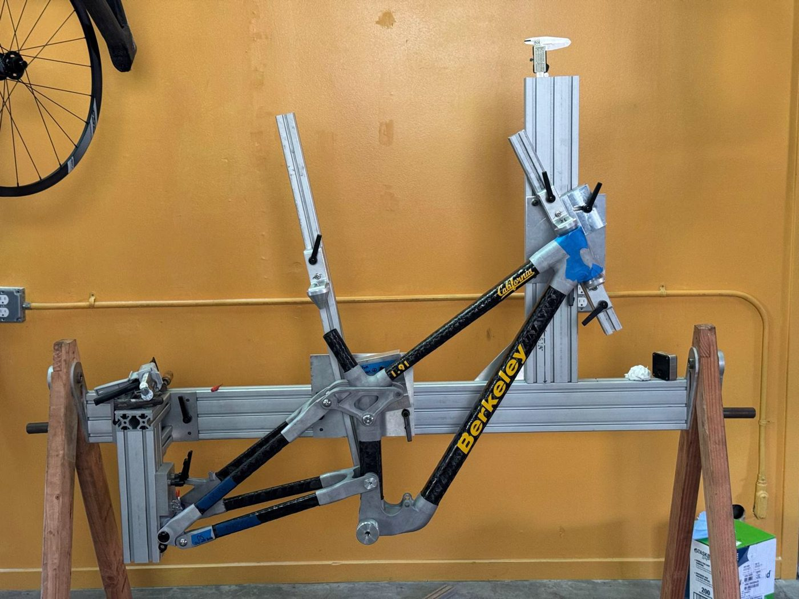 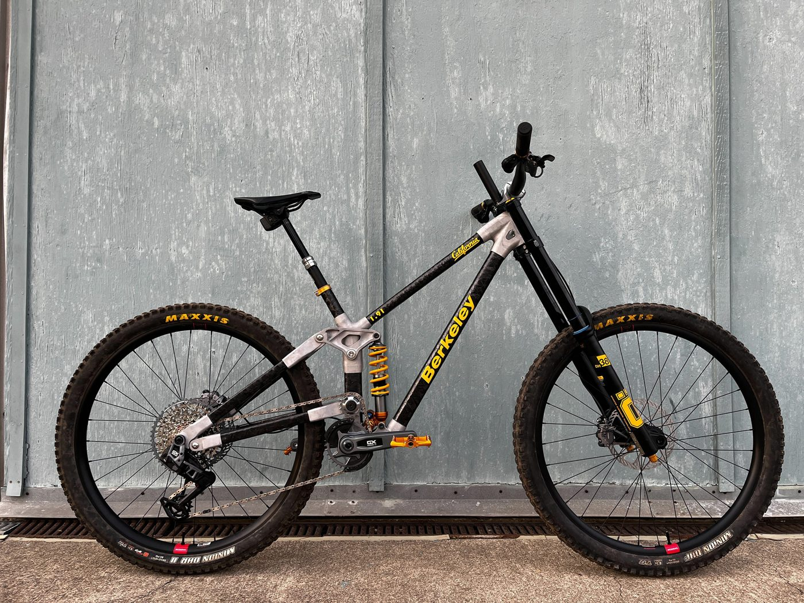